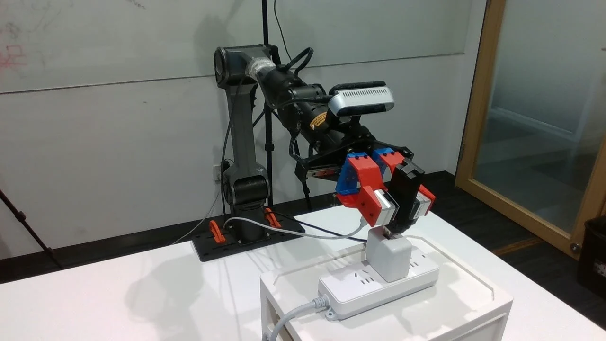
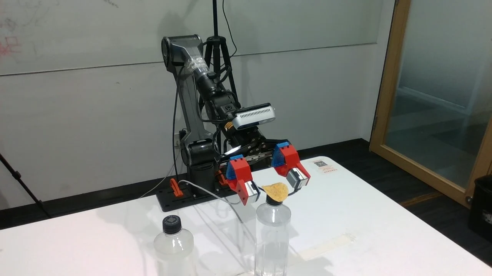
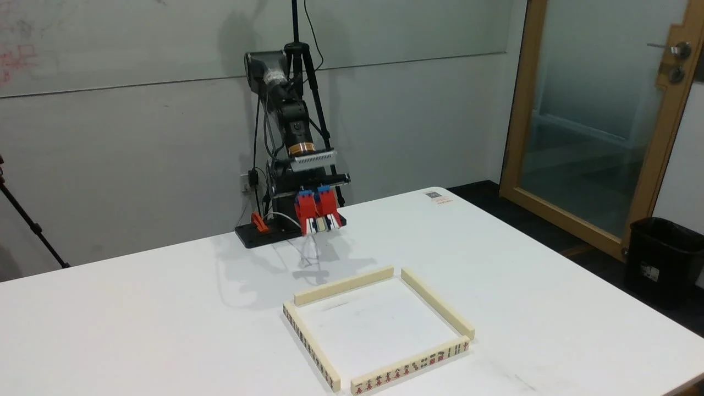
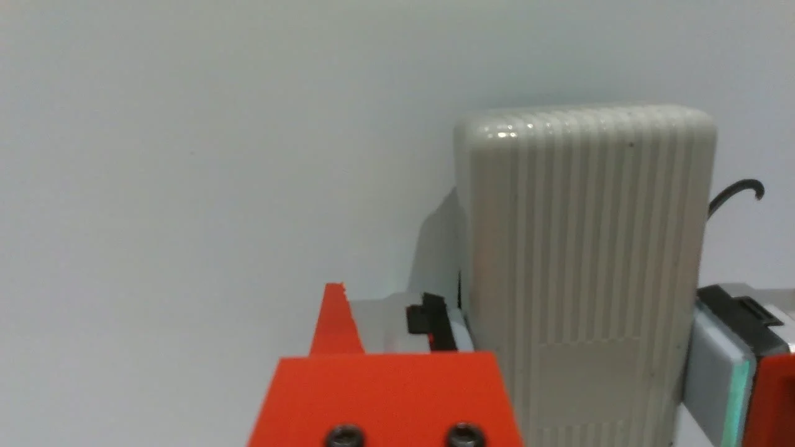
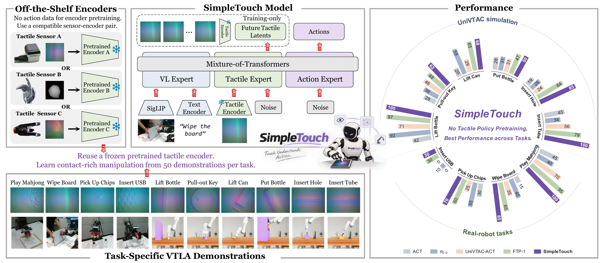

Preserve the representation
A frozen T3 encoder retains every global and spatial token from current touch.
Touch meets vision-language-action
A simple extension. A richer sense of contact.
One tactile expert, learned from task demonstrations.

01 / Insert USB
02 / Pick Up Chips
03 / Play Mahjong
04 / Wipe BoardThe central idea
Strong tactile manipulation does not have to start with another policy-pretraining stage.
SimpleTouch builds on a pretrained π0.5 policy and a pretrained tactile encoder. A tactile expert learns how to use contact information directly from task demonstrations, with future-touch prediction providing additional supervision.
There is no additional tactile policy pretraining and no separate visuotactile alignment stage.
The complete abstract is available in the paper.
01 / Method
Keep the pretrained VLA.
Add a tactile expert.
Learn from the same task demonstrations.
A frozen T3 encoder retains every global and spatial token from current touch.
The action expert reads the tactile expert’s layerwise keys and values alongside visual-language context.
Multi-horizon tactile prediction trains the same expert that supplies current-touch context for action generation.
The VLA policy and tactile expert are optimized jointly while T3 stays frozen. Predictive supervision spans multiple future moments, using pooled tactile targets.
02 / Results
Highest success among evaluated methods
across six simulation and four real-world tasks,
with 50 demonstrations per task.
UniVTAC simulation
Average task success
Highest success on every evaluated UniVTAC task, without additional tactile policy pretraining.
Six contact-rich tasks · 50 demonstrations per task · 100 evaluation episodes per task. Avg. w/o Lifts excludes Lift Bottle and Lift Can.
Bold indicates the best result; underlining indicates the second-best result. See the paper for method-specific evaluation protocols.
03 / What makes it work
Using all 197 current tactile tokens per sensor achieves 74.3% mean success, compared with 57.5% using only the CLS token.
Multi-horizon prediction reaches 74.3%, versus 68.5% for single-horizon prediction at the same per-horizon spatial resolution.
On Put Bottle and Insert Hole, SimpleTouch with 20 demonstrations outperforms FTP-π0.5 with 50 demonstrations.
demonstrations at these compared settings
Token and prediction ablations report the mean over Pull-out Key, Put Bottle, Insert Hole, and Insert Tube.
Go deeper
Read the full method, controlled ablations, and evaluation protocols.

SimpleTouchCan Vision-Language-Action Models Master Contact-Rich Manipulation Without Tactile Policy Pretraining?
@misc{yang2026simpletouchvisionlanguageactionmodelsmaster,
title={SimpleTouch: Can Vision-Language-Action Models Master Contact-Rich Manipulation Without Tactile Policy Pretraining?},
author={Chen Yang and Linzhe Shi and Changjie Wu and Hang Zhang and Ronghan Chen and Lingjun Zhang and Xu Hu and Mu Xu and Jiansheng Fan and Chen Wang},
year={2026},
eprint={2610.02784},
archivePrefix={arXiv},
primaryClass={cs.RO},
url={https://arxiv.org/abs/2610.02784},
}